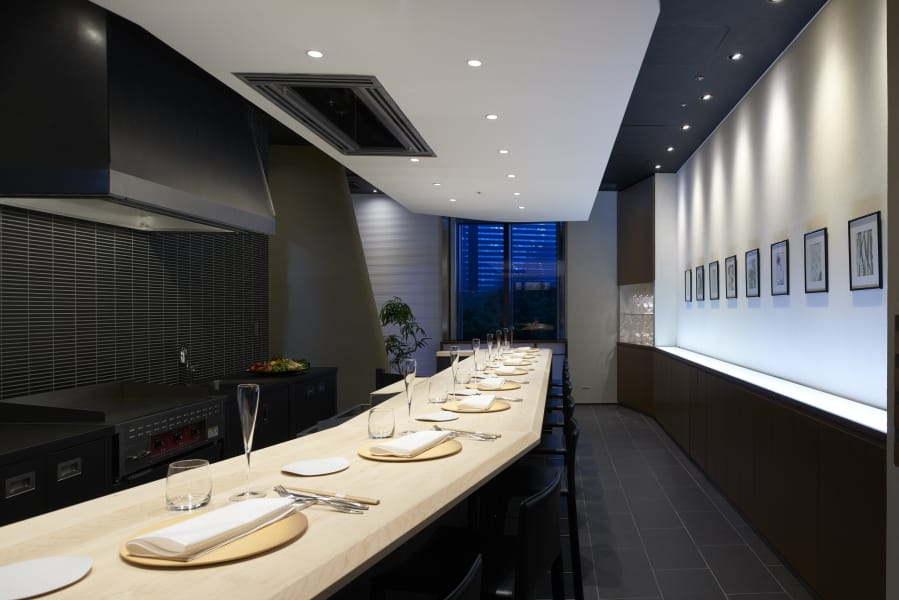

📷
Restaurant TOYO Tokyo（日比谷）― 東京ミッドタウン日比谷3階の特別な一席
「知っている人だけが連れて行ける店がある。
日比谷に、その格がある。」
日比谷に、その格がある。」
― FOOTBALL CONNECTION 編集部コメント
FOOTBALL CONNECTION MEMBER
オーナーの阿部洋介氏は法政大学・シルバースターOB。フィールドで培った「本物を追求する姿勢」と「仲間への誠実さ」が、レストランの隅々まで宿っている。
🍷 このお店について
日比谷公園が目前に広がる東京ミッドタウン日比谷3階。 エレベーターを降りると、光と空間が迎えてくれる。 Restaurant TOYO Tokyo は、オーナー阿部氏がパリで出会った感動の食体験を東京に還元すべく開いたフレンチレストラン。 「食事そのものが、人生の記憶になる体験であってほしい」という想いが、料理・空間・サービスの三位一体で表現されている。
CUISINE & MEMORY
東京ミッドタウン日比谷という格
日比谷・有楽町エリアの最高峰ロケーション。
国内外のビジネスパートナーを招いても、大切な人を連れて行っても、
「この場所を選んだ」センスそのものが伝わる。
パリ直伝のエッセンス、日本の食材との融合
パリの名店で磨かれたフレンチの技法に、日本の四季と食材を重ねた料理。
ランチは11:30〜14:30（LO 13:00）、ディナーは18:00〜23:00（LO 20:00）。
コースを通じて一皿一皿に物語がある。
人生の節目を彩る、選ばれる一軒
記念日・誕生日・昇進祝い・大切な会食。
「何かを祝う日」に選ばれ続ける理由が、この店には揃っている。
初めて連れて行く相手にも、絶対に外さない。
✦ OWNER'S VISION ✦
「パリで食事をした夜、食べること自体が特別な記憶になる体験があった。
東京でも、その感動を届けたい。
ここに来た人が、ずっと覚えていてくれる一皿を作り続ける。」
― 阿部洋介オーナー
東京でも、その感動を届けたい。
ここに来た人が、ずっと覚えていてくれる一皿を作り続ける。」
― 阿部洋介オーナー
🏈 アメフト関係者への一言
法政大学・シルバースターでプレーした阿部オーナーが手がけるこのレストランは、 アメフト関係者の集まりにも格好のステージだ。 OB会の特別な回、重要なビジネスシーン、チームの節目の祝いなど、 「ここぞ」という場面でこの店を選ぶと、選んだあなたの評価も上がる。
「焼肉きゅうこん（目黒）」と同じオーナーが手がける2軒目。 日常使いはきゅうこんで、特別な夜はTOYO Tokyoで―― そんな使い分けができるのが、アメフト仲間として誇れることかもしれない。
📅 おすすめ利用シーン
会食・
接待
接待
記念日・
誕生日
誕生日
OB会・
特別な回
特別な回
大切な人
との食事
との食事
昇進・
受賞祝い
受賞祝い
日比谷の
夜を飾る
夜を飾る
📋 基本情報
| 🏪 店名 | Restaurant TOYO Tokyo |
| 📍 エリア | 東京都千代田区 日比谷・有楽町 |
| 🚉 最寄駅 | 東京メトロ 日比谷駅 / 有楽町線 有楽町駅 |
| 🏠 住所 | 東京都千代田区有楽町1-1-2 東京ミッドタウン日比谷3階 |
| 📞 電話 | 03-6273-3340 |
| 🕐 ランチ | 11:30〜14:30（LO 13:00） |
| 🌙 ディナー | 18:00〜23:00（LO 20:00） |
| 🗓️ 定休日 | 月曜日 |
| 🍽️ ジャンル | フランス料理・フレンチ |
| 🔗 公式サイト | toyojapan.jp |
| @restaurant.toyo.tokyo | |
| 👤 オーナー | 阿部洋介（法政大学・シルバースターOB） |